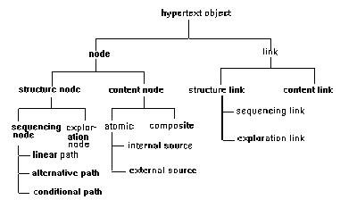

Hypermedia – The Organizational Part
4.2 The Organizational Part
Design objects of the organizational part increase coherence by structuring the network under a reader-oriented perspective. Using such an approach, the author can tailor variants of a document for different audiences.
Structure nodes organize content nodes and links in a specific manner. Each structure node has a name and a starting node. These can be of two types:
- Sequencing nodes that allow the author to define the reading sequence through the content net. Readers can read only those content nodes that are determined by the sequencing node.
- Exploration nodes allow the reader to explore – the reader can simply follow the content links to explore the subnet.
While sequencing nodes constrain the reader’s navigation through the document, exploration nodes allow unconstrained access to its content part.
Structure nodes can be connected by structure links which are also classified into two types:
- Sequencing links associate the content of each sequencing node with a presentation sequence. They can be used to define ordering such as linear sequence, branching sequence etc.
- Exploration links provide access to exploration nodes. An exploration link is embedded into a sequencing node and points to the beginning of an exploration node.
Sequencing nodes along with sequencing links can present different presentation sequences such as sequential paths, branching paths, and conditional paths.
The following design rules can be applied while creating the organizational part:
- Choose an appropriate starting point to serve as an introduction to the document.
- Construct appropriate paths based on reader’s interests and knowledge. This can be done by ordering sequencing nodes and links and providing additional information using exploration nodes and links. Thus, the author can create multiple versions of the document some having strictly linear sequences, some having branches, and conditional paths, and some a combination of all three.

Figure 2.1: Hierarchy of Design Object Classes [Thuring et al., 1991].